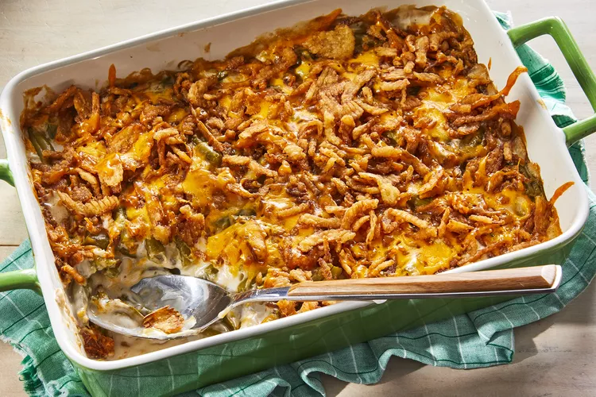

Mix the beans and soup in a microwave-safe bowl and microwave until warm.
Stir in half the cheese. Microwave until melted and well-blended.
Transfer to a prepared baking dish. Top with fried onions and remaining cheese.
Bake in the preheated oven until the cheese is melted and the onions are brown.